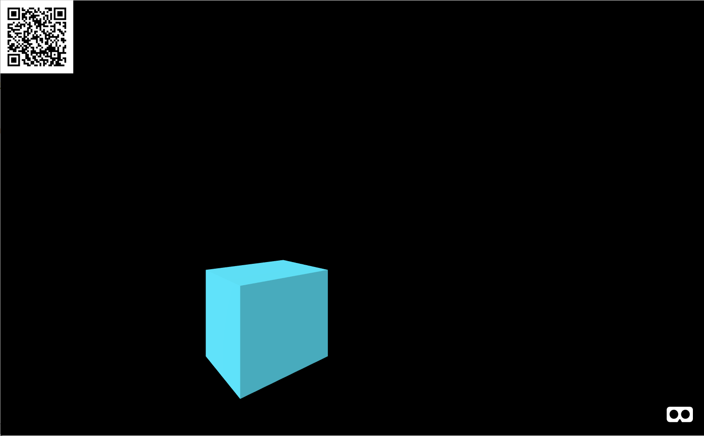
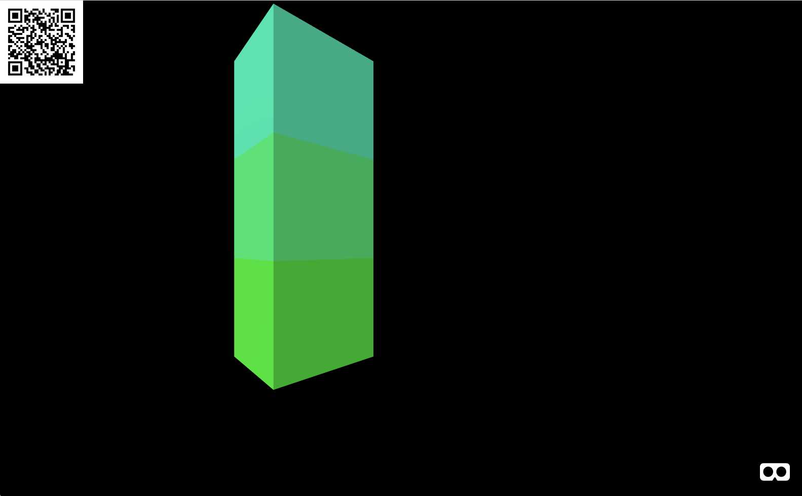
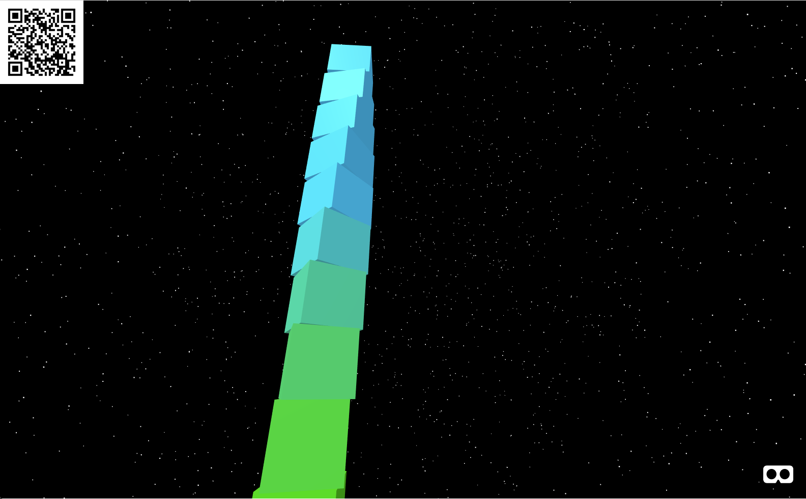
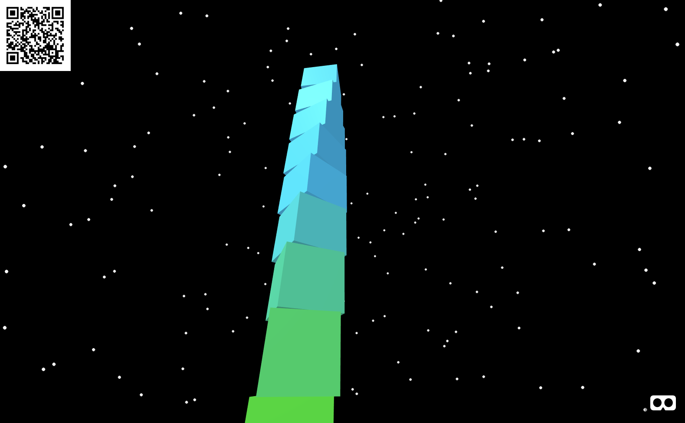
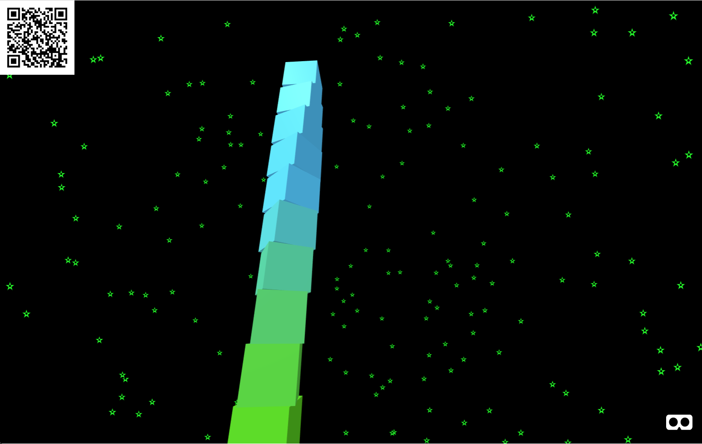
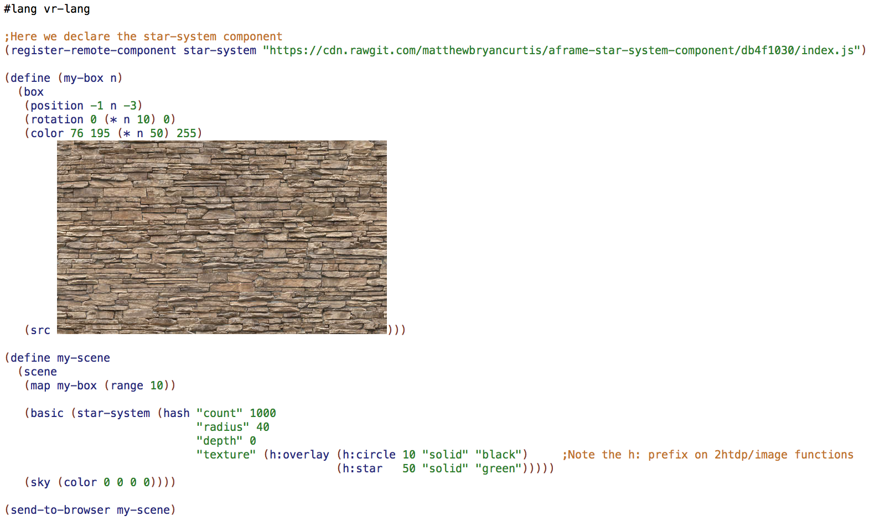
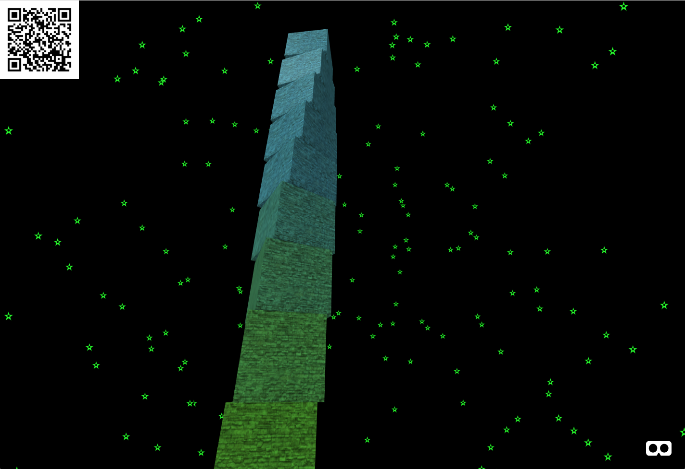
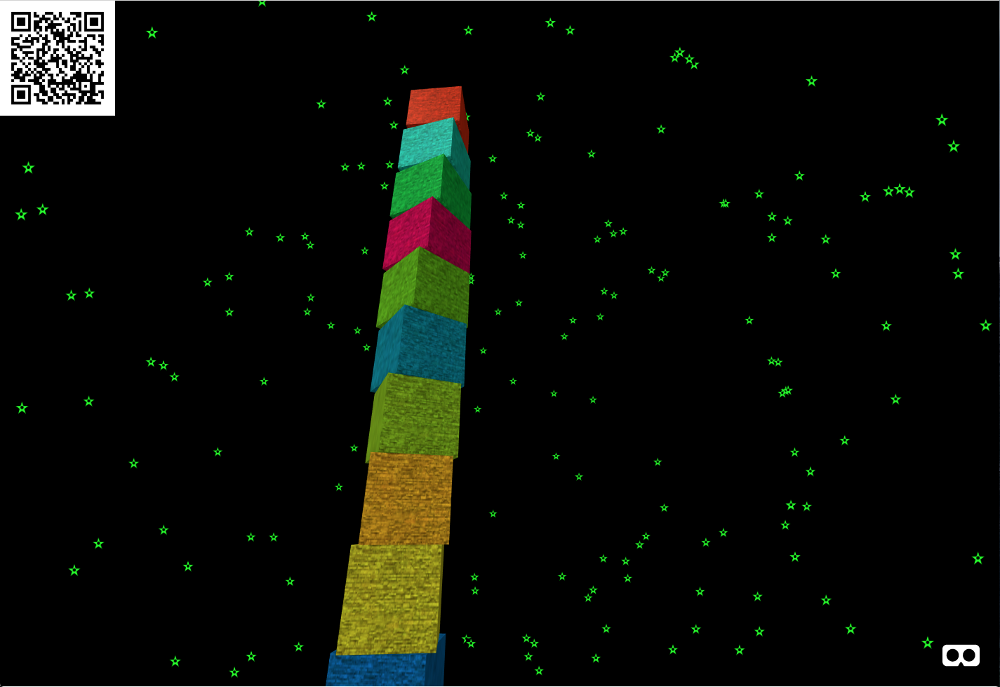

vr-lang
This language allows declarative specification of virtual reality scenes and games.
It works by compiling down to A-frame.io – a JavaScript/HTML framework for specifying VR environments as entity/component systems.
The intention of this language is to wrap up A-frame and provide a more convenient way of specifying VR scenes. For example, here’s a basic "Hello world" example:
#lang vr-lang (define my-scene (scene (box (position -1 0.5 -3) (rotation 0 45 0) (color 76 195 217 255)) (sky (color 0 0 0 0)))) (send-to-browser my-scene)
This alone may not seem very impressive – since it’s basically just an alternative syntax for the HTML-based language of A-frame. However, one nice thing you’ll notice immediately is that Racket takes care of running the server for you. A browser window will pop open and show you the running VR scene. It will also provide a convenient QR code for you to scan on your mobile phone – e.g. to load the scene in Google cardboard.

Things get even better, though because vr-lang is embedded in Racket, meaning you get full access to Racket if you want to procedurally generate parts of your VR scene.
Here we "functionalize" the box in the above program:
#lang vr-lang (define (my-box n) (box (position -1 n -3) (rotation 0 45 0) (color 76 195 (* n 50) 255))) (define my-scene (scene (my-box 1) (my-box 2) (my-box 3) (sky (color 0 0 0 0)))) (send-to-browser my-scene)

Or go crazy with higher-order functions:
#lang vr-lang (define (my-box n) (box (position -1 n -3) (rotation 0 (* n 10) 0) (color 76 195 (* n 50) 255))) (define my-scene (scene ;NOTE: A list of entities gets grouped under a single parent entity (map my-box (range 10)) (sky (color 0 0 0 0)))) (send-to-browser my-scene)

You can also extend vr-lang with remote components (written in JavaScript by other A-frame developers).
#lang vr-lang ;Here we declare the star-system component (register-remote-component star-system "https://cdn.rawgit.com/matthewbryancurtis/aframe-star-system-component/db4f1030/index.js") (define (my-box n) (box (position -1 n -3) (rotation 0 (* n 10) 0) (color 76 195 (* n 50) 255))) (define my-scene (scene (map my-box (range 10)) ;Here we add the star-system component (with no parms) to a basic entity (basic (star-system "")) (sky (color 0 0 0 0)))) (send-to-browser my-scene)

When it comes to remote A-frame components, many can be configured in various ways. For example, a quick look at the docs for the star-system component shows that it has a few config params (https://www.npmjs.com/package/aframe-star-system-component). We can specify those with Racket hashes.
#lang vr-lang ;Here we declare the star-system component (register-remote-component star-system "https://cdn.rawgit.com/matthewbryancurtis/aframe-star-system-component/db4f1030/index.js") (define (my-box n) (box (position -1 n -3) (rotation 0 (* n 10) 0) (color 76 195 (* n 50) 255))) (define my-scene (scene (map my-box (range 10)) ;Here we specify some of the config attributes of the star-system component on a basic entity (basic (star-system (hash "count" 1000 "radius" 100 "depth" 0 "texture" "https://cdn.rawgit.com/matthewbryancurtis/aframe-star-system-component/master/assets/star.svg"))) (sky (color 0 0 0 0)))) (send-to-browser my-scene)

Notice that one of the key value pairs above is the texture for the stars. This is a good time to mention that vr-lang is pretty cool when it comes to images. You can specify in the normal (boring) way like above. Or you can procedurally generate the images in-line using the 2htdp/image library.
NOTE: This works ANYWHERE that you could specify an image url.
We can alter the code above slightly to demonstrate this...
#lang vr-lang ;Here we declare the star-system component (register-remote-component star-system "https://cdn.rawgit.com/matthewbryancurtis/aframe-star-system-component/db4f1030/index.js") (define (my-box n) (box (position -1 n -3) (rotation 0 (* n 10) 0) (color 76 195 (* n 50) 255))) (define my-scene (scene (map my-box (range 10)) (basic (star-system (hash "count" 1000 "radius" 40 "depth" 0 "texture" (h:overlay (h:circle 10 "solid" "black") ;Note the h: prefix on 2htdp/image functions (h:star 50 "solid" "green"))))) (sky (color 0 0 0 0)))) (send-to-browser my-scene)

In fact, we can take advantage of this to put a texture on those boxes by embedding the desired texture directly into the code.
This works great in DrRacket, but generating documentation with code and images doesn’t seem to work – so I’ll just embed a picture of my code-with-picture. (Sorry for the difference in style between this example and the previous ones.)


Please take a moment to reflect on how insanely awesome it is that you can embed the desired image directly into your code. How much more declarative can a language get? (Also note, you don’t HAVE to embed like this. You can also specify a url in the normal way if you want to.)
For our next example, we’ll look at defining a custom component using JavaScript. Well... it’s sort of JavaScript. It’s a language called Urlang (see docs: https://github.com/soegaard/urlang). You can think of it as JavaScript with Lisp syntax and JavaScript semantics. It compiles to JavaScript and it executes at runtime in your browser.
So here we’ll make a random-color component that picks a different random color for each of those boxes whenever the page loads. Fun!
#lang vr-lang (register-component random-color init: (var (randomHue (Math.floor (* (Math.random) 360)))) (this.el.setAttribute "color" (+ "hsl(" randomHue ",100%,50%)"))) (register-remote-component star-system "https://cdn.rawgit.com/matthewbryancurtis/aframe-star-system-component/db4f1030/index.js") (define (my-box n) (box (position -1 n -3) (rotation 0 (* n 10) 0) (src "./stone-texture.png") (random-color))) (define my-scene (scene (map my-box (range 10)) (basic (star-system (hash "count" 1000 "radius" 40 "depth" 0 "texture" (h:overlay (h:circle 10 "solid" "black") ;Note the h: prefix on 2htdp/image functions (h:star 50 "solid" "green"))))) (sky (color 0 0 0 0)))) (send-to-browser my-scene)

Okay, that’s it for now. It’s basically A-frame.io but with all the cool stuff you get when you embed an A-frame DSL inside a powerful language like Racket.